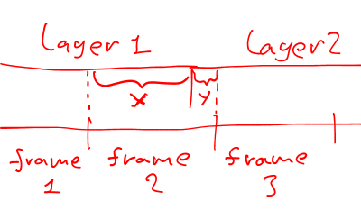

Yes, it's yet another export layers script! This one is mainly targeted for video editing applications. I wrote it because all the other scripts weren't good enough for my purposes.
Script is located in File/Export Layers (scm, by Timofe Shatrov)...
frame_000.png", "frame_001.png" and so on)(NNms)")This script was used to produce the award winning short film "Stretch Those Glutes (ANNIVERSARY EDITION!)"
Output directory - select a directory where to export the files
Filename format - describes how each layer will be named
when it's exported.
You can use several formatting directives:
%l" inserts layer name (don't use this with resampling enabled),You can pad it with zeros so that all numbers have identical width. For example "%3i" will produce "000", "001", "002" and so on. The default filename format uses "%6i" which produces image sequences to be imported in Sony Vegas NLE. Make sure your filename has an extension.
Walk direction - the direction in which the layers are processed.
This mostly affects the counter.
Count offset - what number do we start counting from
Filter - allows to export only visible or only linked layers
Resample mode - when Off, it just exports the layers.
However when "No interpolation" or "Use interpolation" is selected,
it resamples layers to a fixed framerate.
By default a layer is assumed to last 100ms,
which can be changed by assigning a delay to a layer via adding "(XXXms)" to its name.
When exported with resampling, each file represents a fixed amount of time,
which is set by Frame rate option.
For each of these periods of time, a layer is chosen to represent it.
When "Use interpolation" is selected,
it might sometimes select two layers and average them to produce a transition.
Interpolation threshold - when "Resample mode" is
"Use interpolation", this option prevents interpolating
when only a small part of layer fits into a frame. For example:

If y is less than interpolation threshold,
layer 1 will be used for frame 2 without interpolation.
Otherwise, frame 2 will be an interpolation of layer 1 and layer 2.